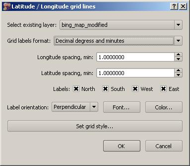

Lat/Lon grid plugin is designed to add grid lines to the QGIS project. It uses extent of some other GIS layer (vector or raster) to compute limits of the grid. This “parent” layer can be as simple as two point features and may not be even visible.
Lat/Lon plugin does not allow adding grid lines to other plugin layers, such as Open Layers.
New grid layer is created entirely in memory, i.e grid lines are not saved into shape file or other type of GIS vector file.
Grid lines are always created in geographical coordinate system. For this reason “project on the fly” option is always need to be enabled to use that layer (see Project / Project properties... menu).
If parent layer uses geographic coordinate system Lat/Lon plugin layer simply uses the same system. If parent layer uses some kind of projected CRS (such as GeoTIFF file in UTM) than Lat/Lon plugin computes inverse transformation and uses inverted extend of the the parent layer.
All plugin layer settings are saved into QGIS project.
The main dialog window of Lat/Lon plugin is shown below:

Use should do the following:
Select parent layer. Dialog presents only suitable layers for selection. If no layer is available warning message is posted and plugin does not start.
Select grid label format. Decimal degrees, degrees and minutes and degrees minutes and seconds are available for selection.
Specify grid spacing for latitude and longitude grid. These values are specified in the least unit selected above. Therefore if user selects units as “decimal degrees” grid line spacing is spcified in decimal degrees as well, if user selects “degrees and minutes” than spacing is in minites, and if “degrees, minutes and seconds” is selected that spacing is in seconds. Spacing labels change depending of selected format.
Labels. Check where labels should be printed.
Label orientation: Labels could be perpendicular or parallel to the area.
Font, color and grid line style allows to select required appearance for the grid lines and labels.
After Lat/Lon grid overlay added to the project, user can double-click or call “propreties” dialog for it; the same dialog as above is called, so it is always possible to adjust grid after it is created.
If parent layer extent is changed, grid extent is adjusted automatically.
If parent layer is removed, grid layer is removed as well.
Acknowledgments
This plugin was developed using “Grid Overlay” by John Donovan, available for QGIS 1.8 series. I have borrowed many ideas and some code from John's plugin. However labeling API has changed for QGIS 2.0. There is a possibility that Lat/lon grid plugin would become outdated as QGIS labeling engine is being replaced.
This is my first Python program, so not all places are nice.
Contact
Please contact Mikhail Tchernychev (mikhail_tchernychev@yahoo.com) regrading all issues related to this plugin.